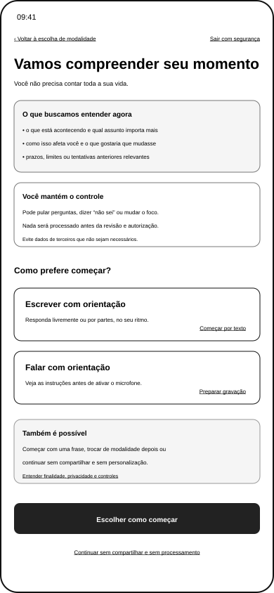
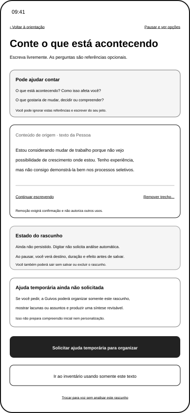
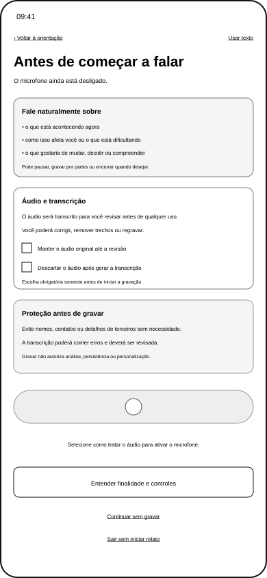
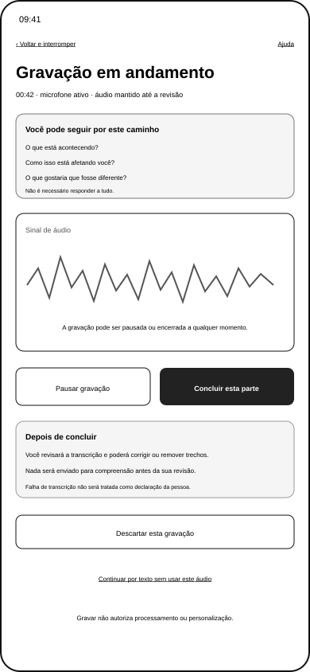
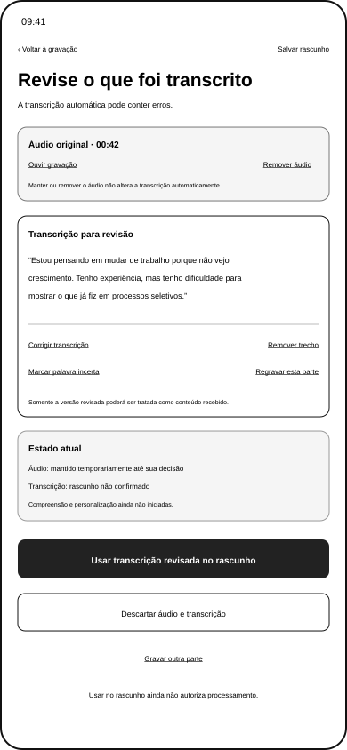
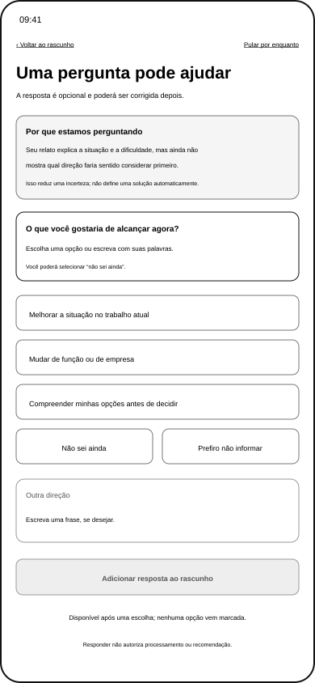
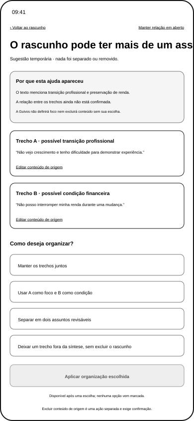
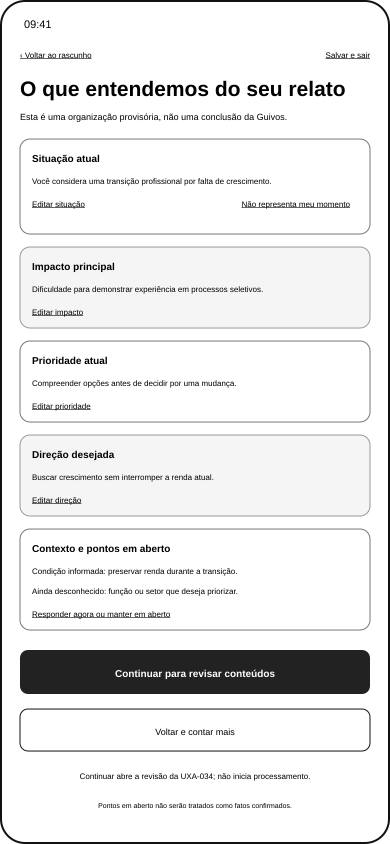

Wireframes Móveis da Expressão Guiada do Momento Atual por Texto e Voz¶
1. Finalidade¶
Esta família ajuda a Pessoa a expressar seu Momento Atual de forma proporcional, corrigível e compreensível antes da preparação da compreensão inicial da Guivos.
A UXA-068 complementa a escolha genérica de modalidade da UXA-034 sem transformar a jornada em questionário obrigatório, diagnóstico ou coleta excessiva.
A UXA-069 validou e reformulou os oito estados da família.
Resultado vigente: oito estados materializados, oito reformulados e oito funcionalmente validados.
2. Posição na experiência¶
Home pública
→ início protegido
→ escolha de modalidade na UXA-034
→ orientação comum da UXA-068
→ conteúdo de origem por texto ou voz
→ revisão da transcrição, quando aplicável
→ ajuda temporária, somente quando solicitada
→ pergunta ou separação, somente quando materialmente útil
→ síntese temporária e revisável
→ decisão sobre usar somente origens ou incluir síntese derivada
→ inventário e autorização específica da UXA-034
→ processamento visível da UXA-036
→ compreensão inicial revisável
A Pessoa poderá seguir do conteúdo de origem diretamente ao inventário sem solicitar pergunta, separação ou síntese.
3. Camadas funcionais¶
A experiência distingue quatro camadas.
| Camada | Exemplo | Regra |
|---|---|---|
| conteúdo de origem | texto digitado ou versão revisada da transcrição | permanece distinguível e corrigível |
| ajuda temporária solicitada | organização, pergunta, separação ou síntese | não prepara compreensão inicial e não personaliza |
| preparação da compreensão inicial | uso de itens revisados para formar hipótese temporária | exige inventário e autorização específica |
| persistência e personalização | manutenção da compreensão e adaptação futura | bloqueadas até o gate da UXA-036 e UXA-037 |
Digitar não solicita análise automática. Gravar autoriza somente a gravação e a transcrição apresentadas. Nenhuma dessas ações autoriza automaticamente as camadas posteriores.
4. Dimensões de referência¶
A orientação poderá apoiar cinco dimensões, sem obrigatoriedade por padrão.
| Dimensão | Pergunta de referência | Proteção |
|---|---|---|
| situação | o que está acontecendo agora? | não exigir biografia completa |
| impacto | o que isso dificulta, causa ou modifica? | não pressupor sofrimento |
| prioridade | o que importa compreender ou tratar agora? | aceitar múltiplas prioridades |
| direção | o que gostaria que mudasse, fosse decidido ou construído? | aceitar não sei ainda |
| contexto | quais prazos, limites, recursos ou tentativas são relevantes? | solicitar somente quando reduzir incerteza material |
Uma dimensão poderá permanecer em aberto sem bloquear exploração geral.
5. Inventário visual validado¶
| Estado | Arquivo | Resultado validado |
|---|---|---|
| orientação comum | uxa-068-guided-current-moment-orientation-mobile.svg |
texto e voz equivalentes; relato separado da ajuda temporária |
| rascunho por texto | uxa-068-guided-current-moment-text-draft-mobile.svg |
conteúdo de origem sem análise automática ou salvamento inventado |
| preparação para voz | uxa-068-guided-current-moment-voice-preparation-mobile.svg |
escolha única sobre áudio e autorização limitada |
| gravação em andamento | uxa-068-guided-current-moment-voice-recording-mobile.svg |
pausa, interrupção, transcrição e descarte com efeitos conhecidos |
| revisão da transcrição | uxa-068-guided-current-moment-voice-transcription-review-mobile.svg |
áudio, transcrição automática e versão revisada separados |
| esclarecimento adaptativo | uxa-068-guided-current-moment-adaptive-clarification-mobile.svg |
lacuna e razão visíveis; opções não são recomendações |
| separação de focos | uxa-068-guided-current-moment-focus-separation-mobile.svg |
organização sugerida e aplicada somente após escolha explícita |
| síntese estruturada | uxa-068-guided-current-moment-structured-summary-mobile.svg |
natureza, origem, estado e uso da síntese derivados explícitos |
6. Artefatos visuais¶
6.1 Orientação comum¶

6.2 Rascunho guiado por texto¶

6.3 Preparação para voz¶

6.4 Gravação em andamento¶

6.5 Revisão da transcrição¶

6.6 Pergunta adaptativa¶

6.7 Separação de focos¶

6.8 Síntese estruturada¶

Todos os arquivos permanecem em baixa fidelidade, com referência móvel de 390 × 844 pixels.
7. Orientação e escolha de modalidade¶
A orientação:
- explica o que poderá ajudar a contar;
- declara que a Pessoa poderá começar com pouco;
- mantém texto e voz com finalidade equivalente;
- remove ação genérica duplicada;
- explica que ajuda temporária depende de solicitação consciente;
- bloqueia preparação da compreensão inicial antes do inventário e da autorização;
- mantém saída sem compartilhar e sem iniciar compreensão.
8. Texto e rascunho¶
O estado de texto:
- mantém campo livre;
- não apresenta organização automática durante a digitação;
- declara
Rascunho ainda não persistidoenquanto destino e retenção não forem definidos; - apresenta pausa como acesso a opções de rascunho, não como salvamento implícito;
- permite solicitar ajuda temporária ou seguir usando somente o texto de origem;
- mantém remoção destrutiva sujeita a confirmação futura;
- permite troca para voz sem analisar silenciosamente o rascunho.
9. Voz, áudio e transcrição¶
Antes da gravação, a Pessoa escolhe uma alternativa mutuamente exclusiva:
- manter o áudio somente até decidir após revisar;
- apagar o áudio quando a transcrição estiver disponível.
Nenhuma opção vem selecionada.
A ação explícita autoriza somente:
- ativar o microfone;
- registrar a parte falada;
- gerar transcrição para revisão.
Durante a gravação:
- o estado do microfone permanece textual;
- pausa não conclui nem transcreve;
- conclusão encerra e gera transcrição;
- interrupção abre decisão sobre a parte atual;
- descarte exige confirmação futura;
- mudança para texto não causa perda silenciosa.
Na revisão:
- áudio original, transcrição automática e versão revisada permanecem separados;
- correções não são perdidas ao voltar sem aviso;
- remover áudio não apaga automaticamente a transcrição;
- usar a versão revisada apenas a adiciona ao rascunho;
- falhas automáticas não se tornam fatos sobre a Pessoa.
10. Ajuda temporária¶
A ajuda temporária poderá:
- localizar uma dimensão ainda não informada;
- sugerir uma pergunta opcional;
- indicar que trechos podem representar assuntos diferentes;
- organizar uma síntese revisável.
Ela somente ocorre após ação consciente da Pessoa e utiliza o rascunho atual para a finalidade apresentada.
Ela não poderá:
- iniciar compreensão inicial;
- produzir recomendação;
- persistir compreensão;
- personalizar superfícies;
- separar assuntos automaticamente;
- excluir conteúdo de origem;
- transformar desconhecido em fato.
11. Pergunta adaptativa¶
A pergunta demonstra:
- lacuna identificada;
- razão e utilidade;
- alternativas tratadas como exemplos, não recomendações;
- ausência de seleção padrão;
- texto livre;
não sei ainda;prefiro não informar;- possibilidade de manter a dimensão em aberto;
- remoção da ajuda temporária;
- ausência de autorização para compreensão ou recomendação.
12. Separação de assuntos¶
A experiência utiliza linguagem de possibilidade, não conclusão.
A Pessoa poderá:
- manter a relação em aberto;
- manter trechos juntos;
- definir foco e condição;
- separar em assuntos revisáveis;
- retirar trecho somente da síntese;
- editar o conteúdo de origem.
A organização somente é aplicada após escolha explícita. Excluir o conteúdo de origem permanece ação separada.
13. Síntese estruturada¶
A síntese é apresentada como organização derivada, não como compreensão da Guivos.
Cada bloco identifica:
- natureza;
- origem;
- estado;
- ações de edição, manutenção em aberto ou remoção da síntese.
A Pessoa poderá:
- seguir ao inventário usando somente os conteúdos de origem;
- revisar e adicionar a síntese como item derivado;
- voltar ao rascunho;
- descartar somente a síntese.
A síntese não substitui fontes e não será utilizada automaticamente.
14. Base insuficiente¶
Quando houver pouco conteúdo, a experiência poderá:
- manter desconhecidos explícitos;
- oferecer pergunta opcional;
- permitir seguir somente com as fontes;
- permitir continuar sem personalização;
- permitir pausar ou encerrar.
Ela não completará lacunas por suposição nem produzirá Próximo Passo pessoal nesta família.
15. Cobertura visual validada¶
| Família da jornada pessoal | Materializados | Validados | Pendentes |
|---|---|---|---|
| Início protegido geral — UXA-034 | 4 | 4 | 0 |
| Compreensão inicial — UXA-036 | 5 | 5 | 0 |
| Expressão Guiada — UXA-068 e UXA-069 | 8 | 8 | 0 |
| Subtotal relacionado | 17 | 17 | 0 |
Essa contagem permanece separada de Coletivos e Opportunity Boost.
16. Proteções confirmadas¶
- compartilhar pouco é legítimo;
- nenhuma pergunta é obrigatória por padrão;
- nenhuma modalidade é favorecida;
- o microfone não inicia automaticamente;
- nenhuma escolha vem marcada;
- tempo de fala não mede qualidade;
- transcrição não confirma conteúdo;
- ajuda temporária não cria compreensão;
- síntese não substitui fonte;
- desconhecido não é fato;
- remover da síntese não exclui o rascunho;
- conteúdo de terceiros não é solicitado;
- continuidade sem personalização permanece disponível;
- digitar, gravar ou revisar não autoriza processamento material.
17. Limites¶
A família validada não:
- define modelo de IA ou algoritmo adaptativo;
- define armazenamento local ou remoto;
- implementa gravação, transcrição, exclusão ou persistência;
- define política jurídica final;
- cria protocolo clínico ou emergencial;
- materializa envio guiado de arquivos;
- cria protótipo ou teste;
- conclui acessibilidade técnica;
- inicia Engenharia de Produto;
- cria ambiente de simulação;
- inicia
Meus Coletivos.
18. Próxima transição¶
A expressão guiada está materializada e funcionalmente validada.
A escolha da próxima frente dependerá de autorização separada e não iniciará automaticamente protótipo, simulador, Engenharia ou continuidade de Coletivos.